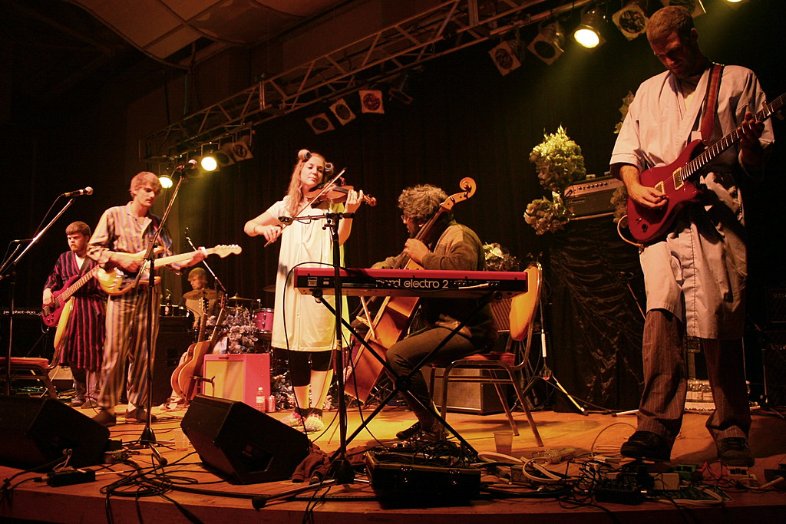

Hey Rosetta!
Hey Rosetta is a wonderful indie rock band hailing from St. John's, made up of seven members: Tim Baker, Kinley Dowling, Romesh Thavanathan, Adam Hogan, Phil Maloney, Josh Ward, and Mara Pellerin.
I found out about Hey Rosetta! because I was a fan of Tim Baker's solo music. I didn't even know he was part of a band until I saw him live at the Bronson Centre in 2024. He performed the song "Carry Me Home", which is a song from Hey Rosetta's holiday themed EP A Cup of Kindness Yet.
2014 saw the release of their fourth and currently final album, Second Sight. I would say this is probably my favourite HR! album, as it has many of my favourite songs on it. The opening track, "Soft Offering (For the Oft Suffering)", is simply majestic. It is a celebration of the nighttime, featuring distinctive percussion and keyboard patterns, matched with gorgeous singing courtesy of Tim Baker. "What Arrows" is a masterpiece just shy of seven minutes long. It is another nocturnal sounding track that starts slow only to explode into melodic indie goodness in the last two minutes. I only really started listening to HR! this year, and yet that final part of the song feels so nostalgic to me. Other highlights for me would be "Gold Teeth", "Dream", "Kintsukuroi", and "Harriet".
In 2017, Hey Rosetta! announced they would take a hiatus for some time due to the members desiring a break, as well as each of them deciding to pursue different projects. There is still no indication of the band reuiniting yet as of April 2026. That being said, Tim and Kinley have both been releasing solo music since the hiatus begun, which I highly recommend!